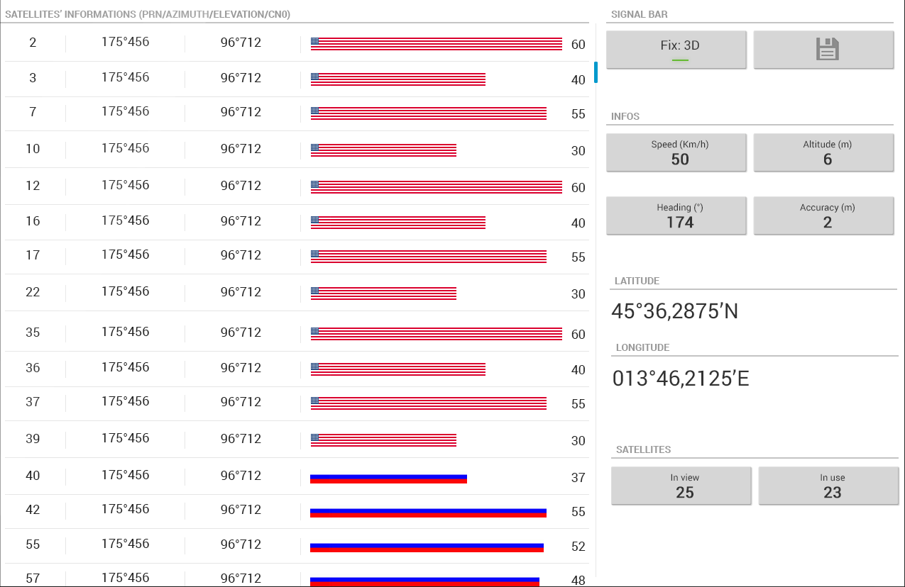
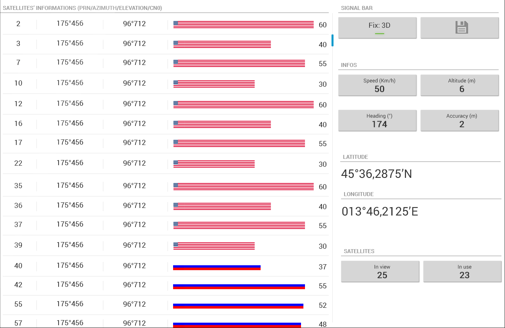

ST-TRACS est une application développée par 8 étudiants du département informatique de l'INSA de Rennes, en collaboration avec STMicroelectronics
Le client
La division automobile de STMicroelectronics nous a sollicité pour répondre à un besoin réel de l'entreprise
Son besoin
L'entreprise veut tester sa solution de Dead Reckoning, une technologie offrant la possibilité de poursuivre la navigation assistée par GPS même lors de la perte des signaux satellites.
La solution
La solution envisagée est une application Android permettant aux collaborateurs de STMicroelectronics de visualiser les données GPS et Dead Reckoning renvoyées par la puce testée.

 
